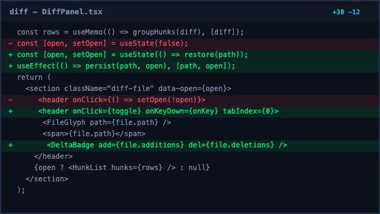

worktree~/cc/worktrees/notepad-slice-1
Running
notepad data model
context42%aligned v3
claude
plan the 0.4 release4 messages4 / 4
You ·09:41
Read
slice-1 working context
before you draft the release plan, and keep
notepad data model
updated as you go.
claude ·09:42
Read it. The open threads are clear — I’ll draft the rollout comms first and flag anything that moves the launch date. I can draft the plan where you can edit it inline.
You ·09:44
Draft it in the notepad. Append only what you can verify against the running code.
claude ·09:45
Appending the comms draft under Open threads. Working from rev 15 — if you edit meanwhile I’ll re-read before retrying.
Notepads{{ noteCount }}
Pinned
{{ note.name }}{{ note.time }}
{{ sectionTwoLabel }}
{{ note.name }}{{ note.time }}
Globalreachable everywhere
{{ note.name }}{{ note.time }}
{{ note.name }}{{ note.time }}
{{ openName }}{{ openScope }}
rev 15 · you · 2m
Agent write mode
read onlyagents can read, never write
append onlyagents add to the end, never rewrite
full editagents edit anywhere · history covers restores
governs agents only — you can always edit
Rename
Pin
History…
Copy as Markdown
Archive
Delete…
# slice-1 working context
Everything an agent needs before picking up slice-1 work. Ship behind the `cc.notepad` flag.
## ground rules
- one canonical markdown string — no second representation
- ids are immutable; names are display-only
- your edits always win — agent writes land as new revisions
## open threads
- [ ] rollout comms draft — align in plan the 0.4 release
- [ ] picker group ordering for notepad data model
- [x] restore lands as a new head — settled

diff-spike.png diff-panel spike, keep for reference
## related
agent onboarding briefglobal covers the house rules — agents fetch it themselves.
Previewlive
slice-1 working context
Everything an agent needs before picking up slice-1 work. Ship behind the cc.notepad flag.
ground rules
›one canonical markdown string — no second representation
›ids are immutable; names are display-only
›your edits always win — agent writes land as new revisions
open threads
rollout comms draft — align in plan the 0.4 release
picker group ordering for notepad data model
restore lands as a new head — settled
diff-panel spike, keep for reference
related
agent onboarding briefglobal covers the house rules — agents fetch it themselves.